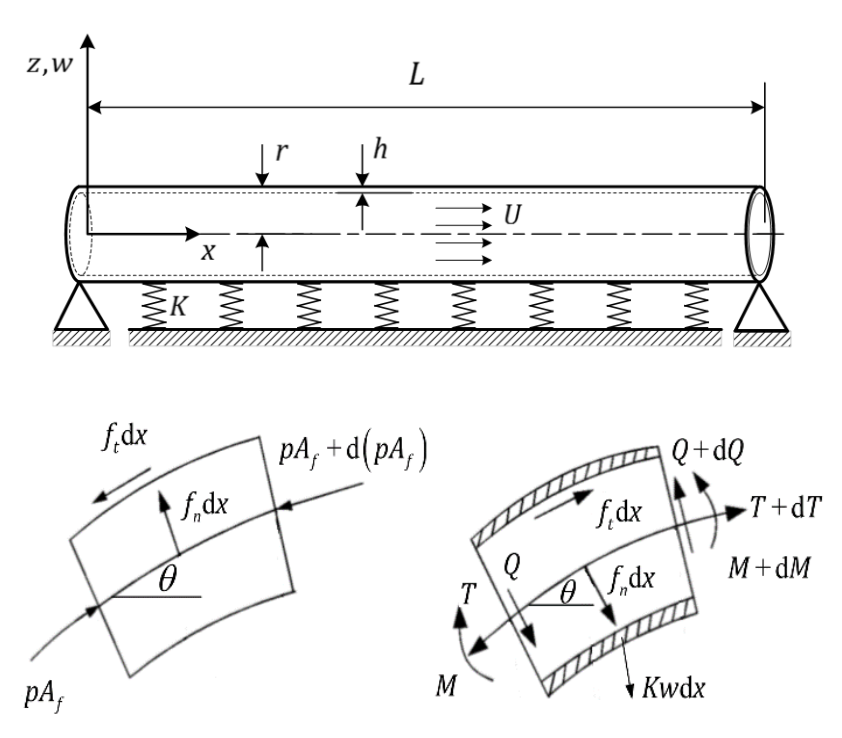

Nonlinear vibration and stability of carbon nanotube conveying fluid embedded in elastic medium
Iranian Journal of Mechanical Engineering Transactions of ISME (in Persian, National Journal), 17(3), pp.27-48, 2015. Journal Article

Abstract
In the present study, considering the geometric nonlinearity, the nonlinear vibration behavior of a carbon nanotube conveying fluid embedded in an elastic medium is studied. The fluid passing through the nanotube is considered to be inviscid and incompressible. Using the Rayleigh’s elastic theory, the governing equation of motion is derived. By considering a suitable parameter, the governing equation is converted to a form which can be solved by the perturbation method. Applying the Lindstedt-Poincare’ method, the time response, the nonlinear resonance frequencies and the fluid critical velocity of the nanotube are obtained. The accuracy of the results is investigated by comparing them with those obtained through the numerical method. Unlike previous researches, the analytical relation for the fluid critical velocity is obtained considering the effect of the geometric nonlinearity. The results indicate that, as the fluid velocity increases and reaches a critical value, the time response amplitude grows without limit and the nanotube loses stability. Moreover, in comparison with the linear and small-amplitude vibrations of nanotube, by increasing the amplitude of oscillations, nonlinear behavior dominates and the instability occurs at a higher fluid velocity.